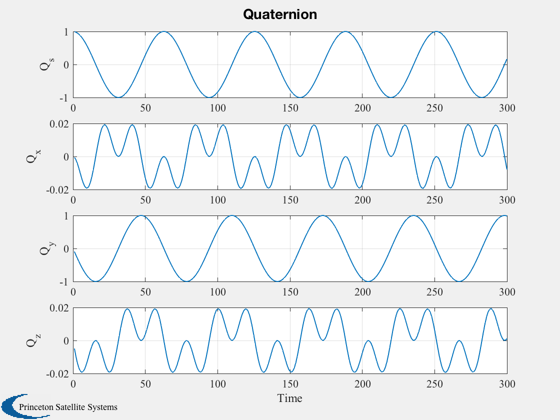
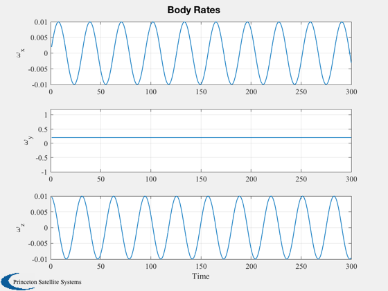
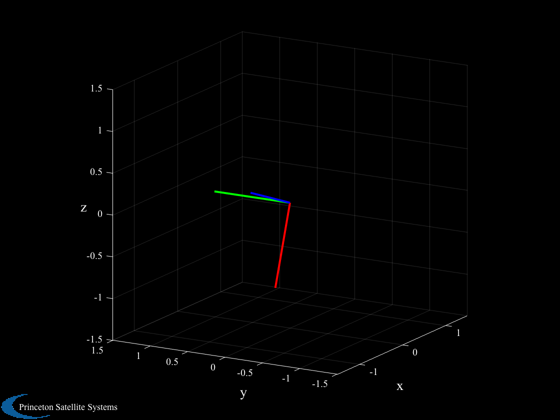

Demonstrates nutation and generates an STK attitude file.
This will plot a time history of the quaternion and body rates and then animate the quaternion with AnimQ. ------------------------------------------------------------------------ See also AnimQ, NPlot, Plot2D, STKAtt, RK4, FRB, JD2Date ------------------------------------------------------------------------
Contents
%-------------------------------------------------------------------------- % Copyright (c) 1995-2002, 2010, 2016 Princeton Satellite Systems, Inc. % All rights reserved. %-------------------------------------------------------------------------- % 2016.1 - Update RHS to use function handle. Save STK file in same directory as % this file. %--------------------------------------------------------------------------
Parameters
% STK Information %---------------- sTKVersion = '3.0'; % Constants %---------- degToRad = pi/180; radToDeg = 180/pi; c45 = cos(45*degToRad); % The control sampling period and the simulation integration time step % -------------------------------------------------------------------- tSamp = 1; % Number of sim steps % ------------------- nSim = 300; tEnd = nSim*tSamp; % Plot every nPMax steps % ----------------------- nPMax = 1; nPlot = nSim/nPMax; % The disturbance model % --------------------- tDist = [0.0;0.0;0.0]; % Spacecraft Inertias % ------------------- inr = [2000,0,0;0,4000,0;0,0,2000]; invInr = inv(inr);
Simulation
% Plotting arrays % --------------- tPlot = zeros(1,nPlot); xPlot = zeros(7,nPlot); % Initial conditions: [quaternion;rate] % ------------------------------------- q0 = [1;0;0;0]; % quaternion w0 = [0;.2;0.01]; % rad/s x = [q0;w0]; dTSim = tSamp; t = 0; nP = 0; kP = 0; % Run the simulation % ------------------ for k = 1:nSim % Integrate %---------- x = RK4(@FRB,x,dTSim,t,inr,invInr,tDist); t = t + dTSim; % Plotting % -------- if( nP == 0 ) kP = kP + 1; xPlot(:,kP) = x; tPlot(kP) = t; nP = nPMax - 1; else nP = nP - 1; end end
Plotting
---------
epoch = JD2Date; filePath = fileparts(mfilename('fullpath')); [err, message] = STKAtt( fullfile(filePath,'STKAttitudeFile.txt'),sTKVersion,epoch,kP,tPlot,xPlot( 1:4,:),'quaternion'); Plot2D(tPlot,xPlot( 1:4,:),'Time',['Q_s';'Q_x';'Q_y';'Q_z'],'Quaternion') Plot2D(tPlot,xPlot( 5:7,:),'Time',['\omega_x';'\omega_y';'\omega_z'],'Body Rates') AnimQ( xPlot( 1:4,:), 50 ) %--------------------------------------
ans =
Figure (Plot2D) with properties:
Number: 3
Name: 'AnimQ'
Color: [0 0 0]
Position: [560 528 560 420]
Units: 'pixels'
Use GET to show all properties
  